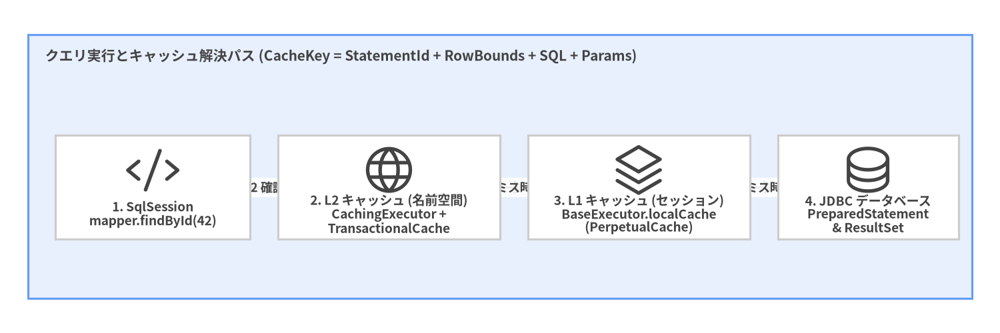
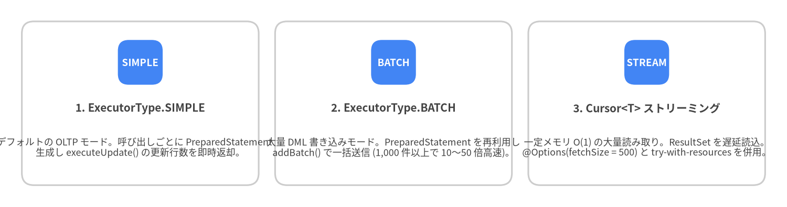

7. L1/L2 キャッシュ・トランザクション・バッチ実行
MyBatis は 2 階層のキャッシュアーキテクチャ (L1 ローカルセッションキャッシュ と L2 名前空間トランザクションキャッシュ) に加え、用途別の 3 つの JDBC 実行エンジン (SimpleExecutor、ReuseExecutor、BatchExecutor) および省メモリストリーミング用の Cursor<T> を備えています。
2 階層キャッシュアーキテクチャ (L1 vs L2)
cacheEnabled="true" の場合、すべての SELECT クエリは BaseExecutor (L1) や JDBC に到達する前に、まず CachingExecutor (L2) を通過します。

Source Code
from drawlib.canvas import save, setup
from drawlib.diagrams.architecture import ArchitectureDiagram, Node, NodeGroup, PhosphorIcon
from drawlib.styles import Colors, Styles
setup(width=144, height=48, dpi=150)
d = ArchitectureDiagram(
node_style=Styles.Dark,
node_text_style=Styles.DarkBold.patch(text_size=9.2),
edge_style=Styles.Dark.patch(line_width=1.5),
edge_text_style=Styles.DarkBold.patch(text_size=8.8),
node_card_style=Styles.Neutral.patch(shape_fill_color=Colors.White),
)
grp = d.add(
NodeGroup(
"クエリ実行とキャッシュ解決パス (CacheKey = StatementId + RowBounds + SQL + Params)",
width=136,
height=38,
style=Styles.PrimaryNeutral,
text_style=Styles.DarkBold.patch(text_size=10.0, halign="left", valign="top"),
),
xy=(4, 5),
)
n_app = grp.add(Node("1. SqlSession\nmapper.findById(42)", icon=PhosphorIcon.CODE, width=28, height=15), xy=(18, 16))
n_l2 = grp.add(Node("2. L2 キャッシュ (名前空間)\nCachingExecutor +\nTransactionalCache", icon=PhosphorIcon.GLOBE, width=32, height=15), xy=(52, 16))
n_l1 = grp.add(Node("3. L1 キャッシュ (セッション)\nBaseExecutor.localCache\n(PerpetualCache)", icon=PhosphorIcon.STACK, width=32, height=15), xy=(88, 16))
n_db = grp.add(Node("4. JDBC データベース\nPreparedStatement\n& ResultSet", icon=PhosphorIcon.DATABASE, width=26, height=15), xy=(121, 16))
n_app.connect(n_l2, label="L2 確認")
n_l2.connect(n_l1, label="ミス時")
n_l1.connect(n_db, label="ミス時")
d.draw(xy=(0, 0))
save()
L1 ローカルキャッシュ (localCacheScope)
L1 キャッシュ (BaseExecutor.localCache) はネストされた <resultMap> クエリ実行時の循環参照解決にも内部利用されるため、常に有効 ですが、localCacheScope 設定によってその保持期間を制御できます。
localCacheScope |
動作 | マルチインスタンス / マイクロサービスでの推奨 |
|---|---|---|
SESSION (デフォルト) |
SqlSession の生存期間中 (commit()、rollback()、更新系 SQL 実行、または close() まで) クエリ結果をメモリに保持します。同一セッション内の再検索では 同一の Java インスタンス参照 を返すため、取得した POJO を変更するとキャッシュ内の値も破壊されます。 |
クラスタ環境や長時間トランザクションでは 非推奨。 |
STATEMENT (推奨) |
単一の MappedStatement 実行中のみ L1 キャッシュを使用し、ステートメント完了直後に即座にクリアします。 |
本番環境での推奨設定 (<setting name="localCacheScope" value="STATEMENT"/>) |
L2 名前空間キャッシュと JEP-290 デシリアライズ保護
L2 キャッシュは Mapper XML の <cache/> または Java の @CacheNamespace によって 名前空間単位で明示的に有効化 します。
<cache
eviction="LRU"
flushInterval="60000"
size="1024"
readOnly="false"
blocking="true"/>
- トランザクションステージング (
TransactionalCache): セッション中に書き込まれたキャッシュエントリはセッションローカルなバッファに一時保持され、session.commit()が成功した時点でのみ共有 L2 キャッシュへ反映 されます。これにより未コミットデータが他セッションへ漏洩することはありません。 - 名前空間単位の無効化に関する注意点: キャッシュ有効な名前空間内で
INSERT・UPDATE・DELETEが実行されると、その名前空間の L2 キャッシュ全体がクリアされます。他の名前空間のテーブルを JOIN するクエリで L2 キャッシュを使うと古いデータが残るため、<cache-ref namespace="..."/>で同期させるか JOIN クエリではuseCache="false"を指定してください。 - JEP-290
jdk.serialFilterセキュリティ (SerialFilterChecker):readOnly="false"(デフォルト) の場合、SerializedCacheはObjectInputStreamを用いてオブジェクトをディープコピーします。MyBatis 3.6.0 のSerialFilterCheckerは JVM にデシリアライズフィルタが設定されていない場合に警告を出力するため、必ず-Djdk.serialFilter=com.example.blog.domain.**;java.util.**;java.lang.**;java.time.**;!*を設定してください。
高スループットバッチ実行 (ExecutorType.BATCH) とストリーミング (Cursor<T>)
数千〜数万行の一括書き込みや、ヒープメモリを圧迫しない数百万行のストリーミング読み取りには、SqlSession の実行モードや Cursor<T> を活用します。

Source Code
from drawlib.canvas import save, setup
from drawlib.smartarts import CardList
from drawlib.styles import Colors, Styles
setup(width=144, height=38, dpi=150)
cards = CardList(
style=Styles.Neutral.patch(shape_fill_color=Colors.White),
text_style=Styles.DarkBold.patch(text_size=10.0),
description_style=Styles.Dark.patch(text_size=8.6),
badge_shape="rounded_rect",
badge_style=Styles.PrimaryFlat,
badge_text_style=Styles.WhiteBold.patch(text_size=9.0),
direction="horizontal",
spacing=3.0,
)
cards.add(
"1. ExecutorType.SIMPLE",
"デフォルトの OLTP モード。呼び出しごとに PreparedStatement を\n生成し executeUpdate() の更新行数を即時返却。",
badge_text="SIMPLE",
)
cards.add(
"2. ExecutorType.BATCH",
"大量 DML 書き込みモード。PreparedStatement を再利用し\naddBatch() で一括送信 (1,000 件以上で 10〜50 倍高速)。",
badge_text="BATCH",
)
cards.add(
"3. Cursor<T> ストリーミング",
"一定メモリ O(1) の大量読み取り。ResultSet を遅延読込。\n@Options(fetchSize = 500) と try-with-resources を併用。",
badge_text="STREAM",
)
cards.draw((4.0, 4.0), width=136.0, height=30.0, align="bottom_left")
save()
ExecutorType.BATCH による高速バルク書き込み
// 大量書き込み用に BATCH モードで専用セッションをオープン
try (SqlSession batchSession = sqlSessionFactory.openSession(ExecutorType.BATCH)) {
AuthorMapper mapper = batchSession.getMapper(AuthorMapper.class);
for (int i = 0; i < 10_000; i++) {
mapper.insert(authors.get(i));
// JDBC ドライバのメモリ肥大化を防ぐため 1,000 件ごとにバッチをフラッシュ
if ((i + 1) % 1_000 == 0) {
batchSession.flushStatements();
}
}
batchSession.commit(); // 残りのバッチをフラッシュしてトランザクションをコミット
}
Cursor<T> による数百万行の省メモリストリーミング
戻り値の型を List<T> から Cursor<T> に変更すると、オープン中の JDBC ResultSet から 1 行ずつオンデマンドでオブジェクトを読み出せます。
public interface PostMapper {
@Select("SELECT id, author_id, title, published_at FROM posts ORDER BY id ASC")
@Options(fetchSize = 500)
Cursor<Post> streamAllPosts();
}
// SqlSession と Cursor<Post> の両方を try-with-resources で囲む!
try (SqlSession session = sqlSessionFactory.openSession();
Cursor<Post> cursor = session.getMapper(PostMapper.class).streamAllPosts()) {
for (Post post : cursor) {
exportRowToCsv(post);
}
}